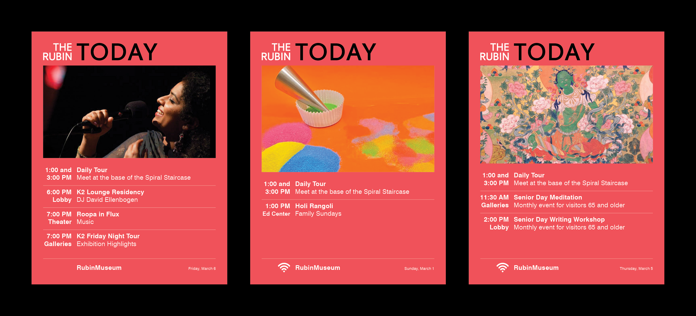
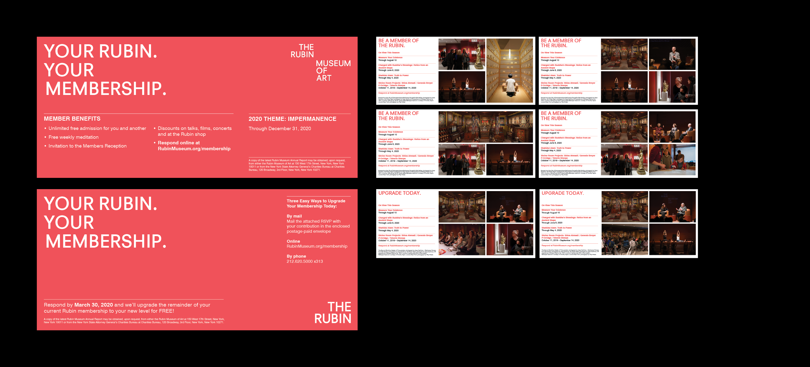
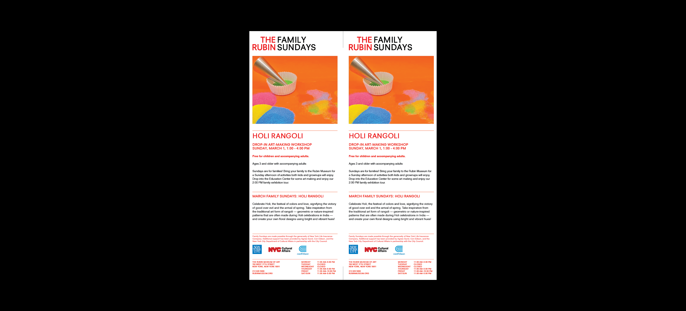
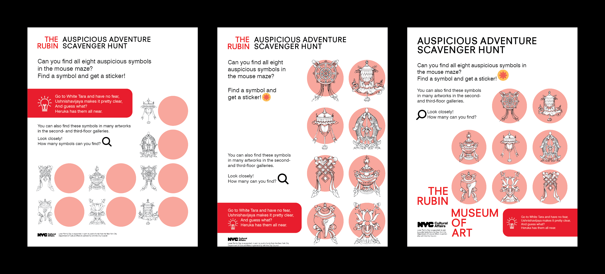
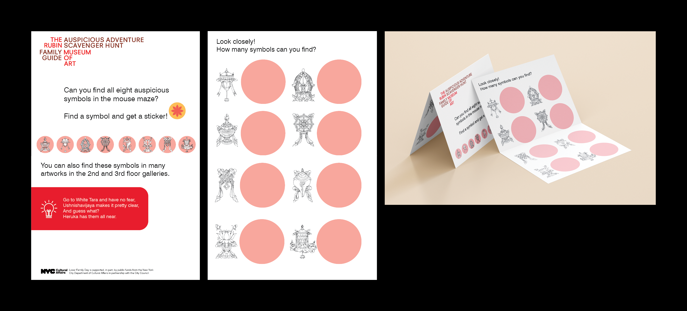
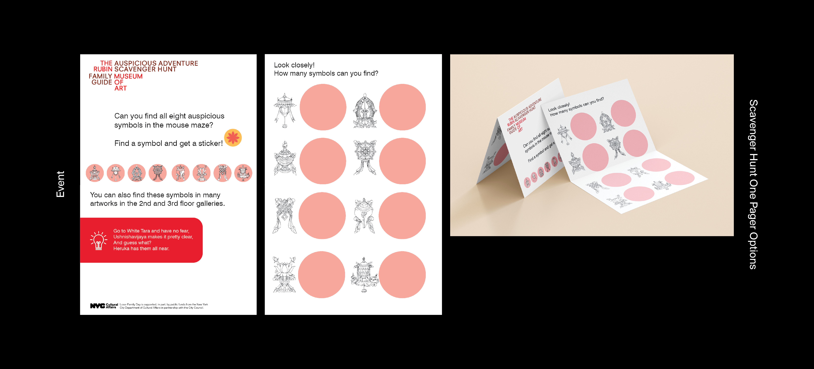
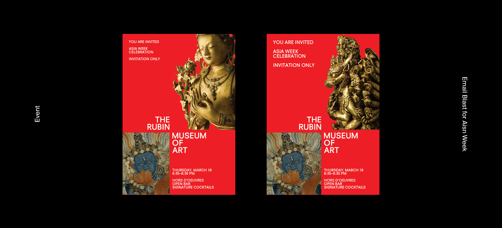

*Prints
*Art Direction
2020
I started interning at the Rubin Museum of Art as a Graphic Design intern in Jan 2020. I was helping mostly with printed materials, including daily department tasks, signage, and flyers. I also help with photo editing for event photos to be used on different mediums.






